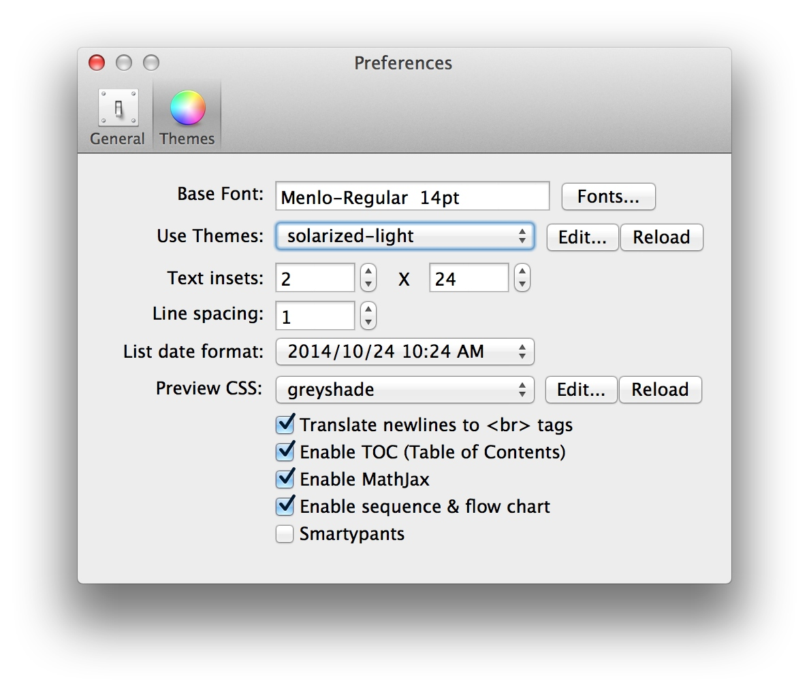
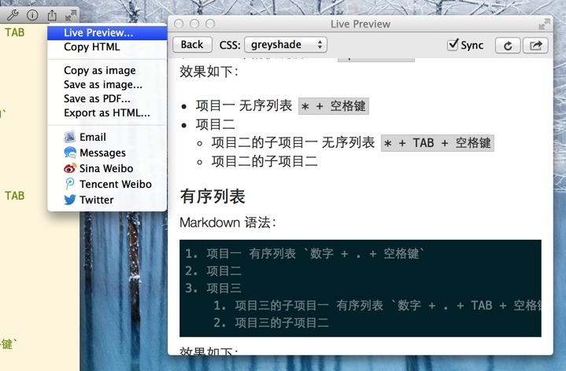
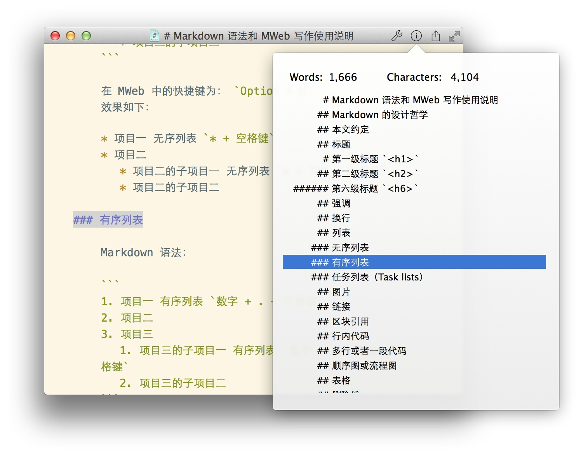
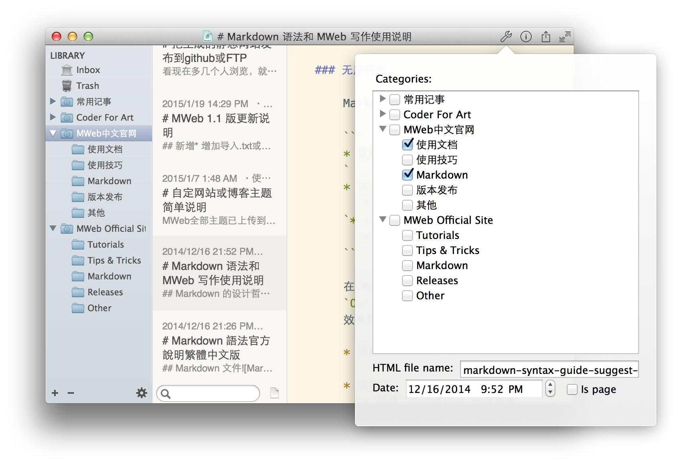
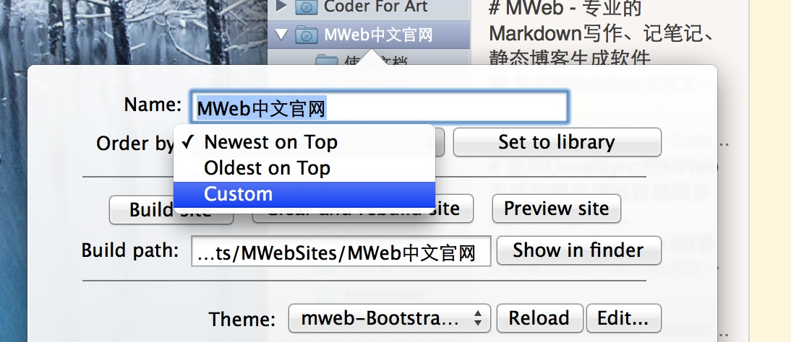

MWeb 文档库模式详细说明
此文章介绍 MWeb 文档库的基本使用，分类及文档的导入和导出，文档排序。
文章目录：
基本使用
如果文档库没有显示，请按：CMD + L 即可显示。
三种视图模式、改变视图时编辑器大小会固定
Editor Only:CMD + 1, Two Pane:CMD + 2, There Pane:CMD + 3。我觉得改变视图时，编辑器区域大小也同时改变不大好，所以改变视图时就直接改变窗口大小，而编辑器区域大小会保持不变。
编辑器和预览设置

右上角的分享按钮

如上图点右 分享按钮 出来的菜单的功能：
- Live Preview：打开即时预览窗口，快捷键为：
CMD + R - Copy HTML：将选中的 Markdown 文本复制为 HTML，如果没有选择任何文本，则会将整个 Markdown 文档复制为 HTML
- Copy as image、Save as image：复制或保存为图片。
- Save as PDF：保存为 PDF
- Export as HTML：导出为 HTML
右上角的文档信息按钮

如上图，点击后会显示文档的大纲，点击标题可以直接跳到所在位置。
右上角的文档库设置按钮（文档库中的文档才有）

如上图可以设置文档的分类和文档所生成的HTML文档的名称、文档时间和是否页面。
分类及文档导入导出、文档排序
 

如上图，右键分类可以编辑当前分类、新增分类和子分类，也可以导入文档到所选分类，还可以把整个分类下的文档导出为 HTML、PDF、Markdown。拖动分类可以改变分类的顺序和位置。另外，也可以用双击来编辑分类。
选择列表中的文档并按右键可以把当前选择的文档在新窗口打开，导出为 HTML、PDF、Markdown。Shift或CMD + 点击列表中的文档 可以多选或取消选择列表中的文档。
列表中的文档默认按文档时间排序，您可以点右上角第一个 文档设置 按钮改变文档时间来改变顺序，也可以在编辑分类面板中设置该分类下的文档的排序方式为：Custom，这样就可以用拖动来改变文档顺序了，如下图：

列表最下方的搜寻框可以按标题搜寻当前选择的分类下的文档。如果要搜寻所有文档，请切换到 Inbox 分类。搜寻框右边则是新建文档按钮。